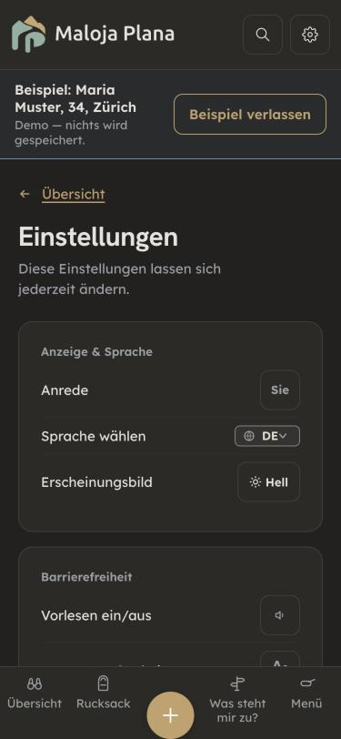
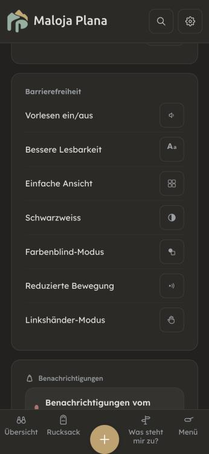
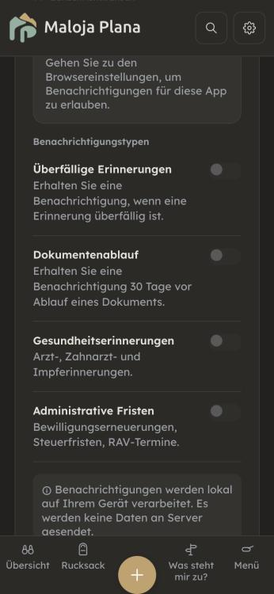
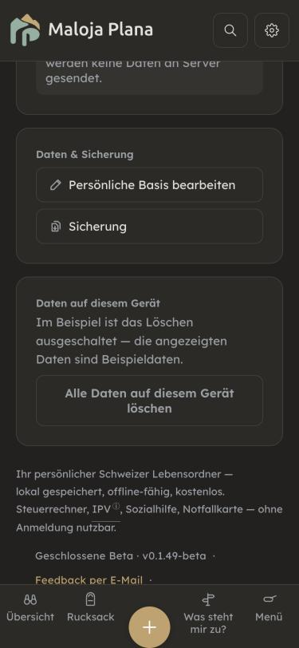
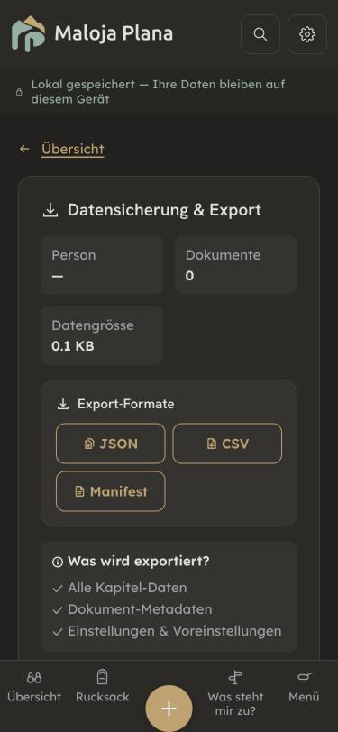
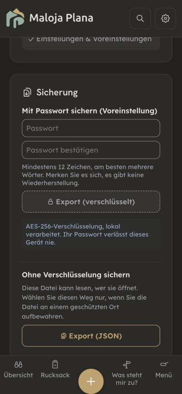
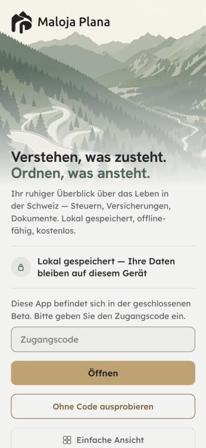
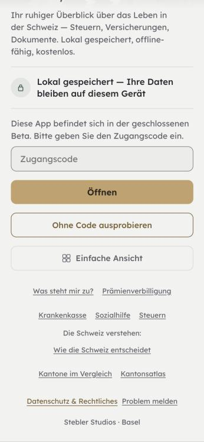

Durchgang 11.11.2026 auf main c865f518. Dritte von fünf Gruppen der Seiten ausserhalb der Kapitel-Befunde 1–7 (Inventar: Gesamtbefund, Abschnitt 5, Punkt 5). Sieben Bereiche: Einstellungen mit Benachrichtigungen, Datensicherung, Rechtliches in der App, Beta-Tor, Sperrbildschirm, App installieren, Teilen/Flyer. Im Browser bei 375 px im Dunkelmodus gemessen, einmal im Beispiel, einmal ohne Beispiel mit leerem Speicher (danach wieder geleert). Der Server lief aus dem Arbeitsbaum der Gruppe B auf demselben Stand c865f518; dort ist in src nichts geändert. Alle fünf Server-Plätze waren belegt. Live mit curl: Manifest auf der Website und unter /app/. Vier Prüfer, alle nur lesend: rechts-pruefer (Datenschutz-Aussagen gegen den Code, nDSG, UWG, Gleichlauf mit public/rechtliches/), sicherheits-pruefer (Verschlüsselung, Import, Löschen, Teilen-Empfang; 32 Tests grün), copy-pruefer (rund 330 Schlüssel in fünf Sprachen) und a11y-pruefer. Kernstellen von Hand im Code bestätigt. Gebaut ist nichts.
Gut: Was die App über Daten sagt, stimmt am Code. Es gibt kein fetch, kein sendBeacon und keinen WebSocket in src; die CSP lässt nur die eigene Adresse zu (index.html, .htaccess, dazu frame-ancestors 'none'). Das Beispiel speichert wirklich nichts (gemessen: localStorage leer). Die Sicherung als Datei ist standardmässig verschlüsselt: AES-256-GCM, frisches Salz und frischer IV je Datei, Passwort mindestens 12 Zeichen. Der Import begrenzt die Grösse auf 50 MB und läuft in der Reihenfolge prüfen, Schnappschuss, schreiben, ganz oder gar nicht. «Alle Daten löschen» ist das beste Muster der Gruppe: zwei Schritte, Fokusfalle mit Escape, ehrlicher Satz «lässt sich nicht rückgängig machen». Es räumt localStorage, sessionStorage, alle IndexedDB-Datenbanken und den Teilen-Speicher, und es sagt, was bleibt. Das Feedback im Beta-Tor öffnet nur einen Mail-Entwurf, ohne Daten aus dem Lebensordner. Flyer und «Link teilen» geben nur malojaplana.ch/?lang=… weiter. Das Beta-Tor nennt sich im Code ehrlich «weich», also als Vorhang und nicht als Schutz. App-Text und statische Rechtsseite stimmen überein: Gerichtsstand Basel-Stadt, Schweizer Recht, Hoster mit Adresse, Log-Frist mit Quelle, AGPL. Kein Satz im Produktivbau verspricht einen Sperrbildschirm. Keine fehlenden Übersetzungsschlüssel, kein ß.
| # | Seite | Befund | Empfehlung |
|---|---|---|---|
| L1 | Einstellungen · Benachrichtigungen | Vier Schalter versprechen «eine Benachrichtigung 30 Tage vor Ablauf eines Dokuments», «Arzt-, Zahnarzt- und Impferinnerungen» und «Bewilligungserneuerungen, Steuerfristen, RAV-Termine» (notifications.*, de.js:5505-5511). Kein Code tut das. Die Schalter werden nur gespeichert und nur von der Einstellungsseite wieder gelesen (getNotificationPrefs). Es läuft einzig checkOverdueReminders (notifications.js:133, Aufruf main.jsx:748): beim Öffnen der App, für überfällige Erinnerungen, ohne Blick auf die Schalter und nie bei geschlossener App. Wer sich auf die Meldung zur Bewilligung verlässt, verpasst die Frist. | Die drei nicht gebauten Schalter ausblenden, den vierten an checkOverdueReminders anschliessen. Dazu der Satz: «Maloja meldet sich, wenn Sie die App öffnen und eine Erinnerung überfällig ist. Bei geschlossener App kommt keine Meldung. Tragen Sie wichtige Fristen darum auch im eigenen Kalender ein.» Mit Test (jeder sichtbare Schalter hat einen Leser). |
| L2 | Datensicherung | Ganz oben unter «Datensicherung & Export» stehen drei goldene Knöpfe JSON, CSV und Manifest. Sie sind keine Sicherung: Sie enthalten die Angaben und nur die Metadaten der Dokumente, ohne die Dateien, ohne Erinnerungen, Kontakte und Merkliste (zipExport.js:138-152). Sie sind unverschlüsselt. Trotzdem lassen sie sich als Sicherung einspielen (detectBackupType erkennt created und version). Wer so das Gerät wechselt, hat danach die Angaben, aber keine Dokumente, ohne Meldung. Die echte Sicherung (collectBackupDataAsync, mit Dokumenten) steht erst darunter. | Die drei Formate unter die Sicherung stellen, als «Für andere Programme (nicht zum Wiederherstellen)», mit dem Satz «Enthält Ihre Angaben ohne Dokumente, unverschlüsselt.» Beim Einspielen einer solchen Datei sagen, was fehlt. Siehe Gestaltung C. |
| L3 | App installieren | Alle Wege beginnen mit «malojaplana.ch in Safari/Chrome öffnen» (install.schritte.*). Unter malojaplana.ch/ steht seit dem Umzug die Website, ohne App-Manifest. Live gemessen: Die Website hat kein <link rel="manifest">, nur /app/ hat eins. Auf dem iPhone landet so die Website auf dem Startbildschirm, auf Android gibt es dort kein «App installieren». | «malojaplana.ch/app in Safari öffnen» usw. in allen fünf Sprachen. Ob die Website einen Weg zur App anbieten soll, ist ein eigener Entscheid (Gruppe E). |
| L4 | Rechtliches · Datenschutz | «Diese Dateien verlassen Ihr Gerät nur, wenn Sie sie aktiv weitergeben» (legal.privacy.backup1). Liegt der Download-Ordner in iCloud Drive oder OneDrive, wird die Datei ohne eigenes Zutun hochgeladen. JSON und CSV sind Klartext, auch mit Gesundheitsdaten. | Ergänzen: «Liegt Ihr Download-Ordner in einer Cloud (etwa iCloud Drive oder OneDrive), wird die Datei dorthin mitkopiert. Für solche Orte die Sicherung mit Passwort wählen.» |
| L5 | Datensicherung | Der Hinweis zur Sicherung ohne Verschlüsselung («Diese Datei kann lesen, wer sie öffnet», de.js:5608) sagt nicht, was drin ist. | «… Sie enthält alle Angaben und Dokumente, auch Gesundheitsdaten.» |
| L6 | Rechtliches · Datenschutz | «Eine Sicherung als Datei erstellen Sie unter Werkzeuge → Export» (legal.privacy.backup1, ebenso fr/it/rm). Diesen Weg gibt es nicht. | «… unter Einstellungen → Daten & Sicherung → Sicherung». |
| L7 | Speicher-Warnung | «Speicher wird knapp … Exportieren Sie Ihre Daten, um Platz zu schaffen» (storage.warningMessage). Ein Export schafft keinen Platz. Wer danach löscht, braucht eine Sicherung mit Dokumenten (siehe L2). | «Legen Sie eine Sicherung an. Danach können Sie grosse Dokumente löschen, um Platz zu schaffen.» |
| L8 | Dokumentenablage | «… erscheint es hier — sicher und nur auf Ihrem Gerät» (tresor.noDocumentsHint, fr «en sécurité», it «al sicuro»). Dieselbe App sagt in der Datenschutzerklärung, dass die Schnappschüsse nicht verschlüsselt sind. Gleiche Art wie Gruppe A L8. | «… erscheint es hier, nur auf Ihrem Gerät gespeichert.» |
| K | verschiedene | Kleiner: Löschen: «auch ein eingerichteter Tresor» ( datenLoeschen.wasEinstellungen). Einen Tresor kann man im Produktivbau nicht einrichten; der Sperrbildschirm lädt nur in der Entwicklungsfassung (main.jsx:88). Den Nebensatz streichen, bis der Tresor live ist · Der Suchbegriff mp_suche im sessionStorage übersteht «Alle Daten löschen» (Schlüssel ohne or5_), etwa «IV» oder ein Medikament.Rechtliches: «Recht auf Datenherausgabe, Art. 28 nDSG» für den eigenen Export passt schief, denn Art. 28 ist ein Anspruch gegen eine Verantwortliche → «Sie können Ihre Daten jederzeit selbst als JSON oder CSV exportieren», ohne Artikel · «ohne Auskunftsgesuch» stimmt für die App. Für E-Mails, Warteliste und Feedback bei Stebler Studios gilt das Auskunftsrecht (Art. 25 nDSG) → in rights4 nennen · «Diese Angaben helfen … (jederzeit löschbar)» beim Feedback: Nach dem Senden löscht nur Stebler Studios → «auf Wunsch löschen wir sie» · «liegt die Sicherheit in Ihrer Verantwortung» → «Weil alles auf Ihrem Gerät liegt, schützt auch Ihr Gerät Ihre Daten. Eine Gerätesperre und regelmässige Sicherungen helfen dabei.» · Beitrag «Knapp bei Kasse: 0 CHF — … ohne schlechtes Gewissen», Medianlohn 6800 CHF ohne Quelle → «Ein Beitrag ist freiwillig. Maloja bleibt für alle kostenlos.»Installieren: «Teilen-Zeichen unten in der Leiste» gilt fürs iPhone; auf dem iPad liegt es oben rechts (nicht am Gerät geprüft) · «Firefox am Computer kann Web-Apps nicht installieren» ist womöglich überholt (Windows, 2025) → «derzeit nicht überall». Impressum: nur «Basel», keine Postanschrift. Die statische Seite sagt selbst «wird abgeklärt», App und Seite stimmen überein. Ob UWG Art. 3 Abs. 1 Bst. s eine Anschrift verlangt, ist offen: nicht ändern, bevor es geklärt ist (eigene Rechtsschutzversicherung oder SECO). Artikel: nDSG Art. 25 und 28 (in Kraft seit 1.9.2023) und UWG Art. 3 Abs. 1 Bst. s sind aus der Kenntnis der Prüfer genannt, nicht am Fedlex-Volltext geprüft. Vor dem Bau jeden neuen Rechtssatz durch den rechts-pruefer am Volltext. | Ergänzen oder belegen. |
| # | Ort | Befund | Empfehlung |
|---|---|---|---|
| T1 | public/sw.js:54-77, 171-173 | Der Teilen-Empfang prüft, wohin ein POST geht, nicht woher er kommt. Eine fremde Website kann per Formular, das sich selbst abschickt, Dateien in den Eingang «Geteilt» legen (10 × 20 MB je Sendung, wiederholbar) und so den Speicher füllen. Abgelegt wird nichts von selbst, und der Name erscheint nur als Text (keine Skript-Lücke). Mittel. | Sec-Fetch-Site nur mit none oder same-origin annehmen, nur PDF und Bilder, Obergrenze für wartende Dateien. Vorher an einem echten Android-Teilen messen, welchen Wert der Browser schickt, sonst sperrt die Regel das echte Teilen. |
| T2 | Beta-Tor | Der Zugangscode steht im Klartext in einer getrackten Doku-Datei des öffentlichen Repos; sein Fingerabdruck passt zu BETA_CODE_HASH. Kein Sicherheitsfall, weil das Tor nur ein Vorhang ist und dahinter keine Daten anderer liegen. Offen ist der Entscheid K105 aus dem Oktober. | Ihr Entscheid: Zeile aus der Doku nehmen und den Code wechseln, oder das Tor ganz abschaffen. |
| T3 | cryptoCore.js:18 | Die Sicherungsdatei nutzt PBKDF2 mit 100 000 Durchgängen, der Tresor 600 000 (OWASP-Empfehlung für SHA-256). Die Zahl steht nicht im Dateikopf. Abgemildert durch die 12 Zeichen. Klein. | Neuer Dateikopf …_V2 mit Durchgangszahl, V1 bleibt lesbar. |
| T4 | verschiedene | Klein: Die automatische Sicherung wird ohne validateBackupPayload und ohne Zurückrollen eingespielt (autoBackup.js:373-389) · In dataValidation.js:48-60 wird sanitized gebaut, aber nie benutzt (toter Code). Prototype Pollution ist nicht möglich · Bei blockierter Datenbank sagt Löschen «gelöscht», obwohl es nur vorgemerkt ist (vertretbar, weil neu geladen wird) · getItem ausserhalb von try (Gesamtbefund T4): Alle Aufrufer fangen ab, die App stürzt nicht ab. | Gleicher Ablauf wie applyBackup, toten Code entfernen. |


role="switch". Das gilt auch für die Einstellungs-Schublade, sie teilt die Gruppierung (settingsGroups.js). Die Sprachwahl (rund 23 px hoch) bekommt 44 px.

datenLoeschen.letzteSicherung).

role="status" direkt unter dem Knopf. Ein Wort für die Datei: «Sicherung» (Sprache S1).

LIGHT_PALETTE), auch wenn das Gerät dunkel ist; nach dem Öffnen springt die App auf dunkel. «Bitte geben Sie den Zugangscode ein», aber nirgends steht, wie man einen bekommt. Das Codefeld hat nur einen Platzhalter, keine sichtbare Beschriftung (Gesamtbefund U12). → Das Tor folgt dem Gerät (hell oder dunkel). Unter dem Feld eine Zeile mit dem Weg zum Code, etwa zur Warteliste auf der Website (die gibt es laut public/rechtliches/); welcher Weg gilt, entscheiden Sie. Sichtbare Beschriftung «Zugangscode» über dem Feld. Falls das Tor ohnehin fällt (T2), entfällt D.div, nur «Benachrichtigungen» ist eine Überschrift (a11y C7) · Rechtliches: acht Reiter à rund 34 px ohne aria-current (C16) · nach «Datei erstellen», «Ablegen», «Verwerfen» und nach dem Entsperren-Fehler fällt der Fokus auf den Seitenanfang (C12, C13, C17), die Rückfrage «Wiederherstellen?» hat den Fokus auf «Ja» (C12) · Passwortfelder ohne sichtbare Beschriftung und ohne autocomplete="new-password" (C10) · Schliessen-Knopf der Speicher-Warnung 12 px (C19) · QR-Code ohne Namen, «Link kopiert» wird unzuverlässig angesagt (C20) · Im Beispiel ist die Sicherungsseite leer: «Export ist im Beispiel-Modus nicht verfügbar. So könnte ein ausgefüllter Lebensordner aussehen.», ohne dass etwas zu sehen ist → zeigen, wie die Seite aussieht, Knöpfe gesperrt mit Grund (Bild) · Dunkelmodus: kein Knopf ohne eigene Farbe gefunden · Schrift unter 13 px: keine.| # | Befund | Empfehlung |
|---|---|---|
| S1 | Viele Namen für das Sichern: «Sicherung», «Datensicherung & Export», «Export (verschlüsselt)», «Backup erstellt», «Snapshot», «Schnappschüsse», «Backups», «Export-Funktion». it «backup» neben «copia di sicurezza». rm «Segirezza» heisst zugleich Sicherung und Sicherheit, Knopf und Überschrift im selben Dialog sind nicht zu unterscheiden. | Die Datei heisst «Sicherung» (it «copia di sicurezza», rm «copia da segirezza», von einer rm-Person prüfen lassen), automatisch im Browser «Schnappschuss». «Export» nur für JSON/CSV. |
| S2 | Tresor, Dokumentenablage, Sichere Ablage, Unterlagen für dieselbe Seite; «Passwort» bei der Sicherung, «Passphrase» beim Tresor (fr «mot de passe» / «phrase secrète»). | «Dokumentenablage» überall, «Tresor» erst, wenn er gebaut ist. «Passwort» überall. |
| S3 | Italienisch: Lei-Fassung mit du-Befehlsformen auf Knöpfen («Installa ora», «Mostra i percorsi», «Scegli la lingua», «Importa backup», «Elimina tutto ora») neben «Scelga», «Vada» und Infinitiven. | Knöpfe als Infinitiv («Installare ora»), Sätze in der Lei-Form, «Sua» gross. |
| S4 | Rätoromanisch (nur Liste, nicht neu übersetzt): Sperrbildschirm ganz deutsch (tresorLock.*, bekannt als TODO(rm)) · Flyer mischt «Vus» mit du-Befehl und «Tia» · notifications.blockedHint nur du · Menüwörter beim Installieren deutsch, ohne Erklärung · Wortfehler «Tut a ses lieu», «Reducir la moviment», «Meglra legibilitad». | Mit // TODO(rm) markieren, eine Person, die Romanisch schreibt, übersetzt. |
| S5 | Fachwörter ohne Erklärung: «Local-First-Webanwendung», «IndexedDB», «localStorage», «AES-256-Verschlüsselung», «Metadaten», «Export-Formate», «Manifest», «White-Label», «SLA»; «Administrative Fristen»; «Ein Rechner, der noch nie geladen wurde» (Computer oder Steuerrechner?). | Halbsatz je Begriff oder weglassen: «verschlüsselt mit Ihrem Passwort», «Fristen bei Ämtern», «Ein Rechner wie der Steuerrechner, der noch nie geöffnet wurde …». |
| S6 | Leiser Druck: «Merken Sie es sich, es gibt keine Wiederherstellung.»; «Achtung»-Ton beim Beitrag («ohne schlechtes Gewissen», siehe K). | «Ohne dieses Passwort lässt sich die Sicherung nicht öffnen, und Maloja kann es nicht wiederherstellen. Bewahren Sie es an einem sicheren Ort auf.» |
| S7 | Gender: «Linkshänder-Modus» (fr «gaucher», it «mancini»), «Farbenblind-Modus»; fr «vous seul la connaissez». | «Für Linkshändige», «Farbsehhilfe»; fr «personne d’autre que vous ne la connaît». |
| S8 | Slogan driftet: fr «Comprendre vos droits» (Übersicht) gegen «ce à quoi vous avez droit» (Flyer), en «Organize what lies ahead» gegen «Sort out what’s next», rm ebenso. | Eine Fassung je Sprache. |
| S9 | Klein: «1 Dokumente» (tresor.docCount ohne Einzahl) · «Scannen & loslegen» · «Laden...» und «Entschlüsseln...» mit drei Punkten statt «…» · „Maloja Plana" in legal.license.trademark1 · fr Leerzeichen vor Doppelpunkt uneinheitlich · en «communities» für Gemeinden, mischt «»/“ ” · it «by Stebler Studios». | Einzahl-Schlüssel, «QR-Code scannen und öffnen:», Satzzeichen angleichen, en «municipalities», it «di Stebler Studios». |
| S10 | Flyer nur in der Sie-Form. Für ein Druckstück vertretbar. | Als Entscheid festhalten, nicht ändern. |
components/Schalter.jsx, role="switch", Wort «An»/«Aus») auf der Einstellungsseite und in der Schublade, nachgeladen. Die Kopfzeile behält ihre Symbole. Bei den Benachrichtigungen bleibt ein Schalter, der wirkt, und der Satz «nur beim Öffnen». Die Sicherungsseite ist umgedreht: Passwort-Knopf immer antippbar, Meldung darunter, JSON/CSV/Manifest zugeklappt, Hinweis beim Einspielen einer Datei ohne Dokumente. Das Tor folgt dem Dunkelmodus, hat eine Beschriftung und den Weg zur Warteliste. Wächter: gruppeCVertrauen.test.js (Mutationsprobe L1 rot gesehen). Der rechts-pruefer hat die neuen Sätze geprüft, DSG Art. 25 am Fedlex-Volltext (Fassung 1.9.2023), vier Sätze danach nachgeschärft. Rätoromanisch: neue Sätze deutsch mit TODO(rm). Nicht im Browser angesehen: Alle fünf Server-Plätze waren von anderen Sitzungen belegt. Offen bei Stebler Studios: neuen Beta-Code wählen. Der alte steht noch in der git-Historie des öffentlichen Repos. Dazu Deploy.legal.*-Texte in fr, it, en, rm; Fedlex-Volltext der genannten Artikel; EDÖB-Adresse live; ob iOS die Daten einer Web-App in die iCloud-Gerätesicherung aufnimmt; ob Infomaniak POST-Inhalte protokolliert (Teilen ohne aktiven Service Worker); npm audit. «App installieren» und «Flyer» nur am Code und am Text, nicht im Bild: Das Browserfenster war in dem Moment ausgeblendet.main, in dieser Reihenfolge: L1 zuerst mit Test (jeder sichtbare Benachrichtigungs-Schalter hat einen Leser), dann L2 mit Gestaltung C (Sicherungsseite umdrehen, Hinweis beim Einspielen einer Datei ohne Dokumente), dann L3–L8, das Kleine und die Sprache S1–S10. Gestaltung A (ein Schalter-Muster) und B (Benachrichtigungen kurz) brauchen Ihr Ja zur Richtung; beide betreffen auch die Einstellungs-Schublade. D hängt an Ihrem Entscheid zum Beta-Tor (T2). T1 erst nach einer Messung am echten Android-Teilen. Einstellungsseite, Sicherung, Rechtliches, Installieren, Flyer und das Tor werden nachgeladen. Im Startbündel liegen aber die Schalter selbst (ctrlBtn, VorlesenToggle, LanguageSwitcher in main.jsx), ThemeToggle und StorageWarning. Muster A und L7 berühren sie; das Bündel steht bei 64 979 von 65 000 Bytes. A darum als nachgeladener Baustein bauen und vor dem Push npm run size. Jeder neue Rechtssatz vor «fertig» durch den rechts-pruefer am Fedlex-Volltext.